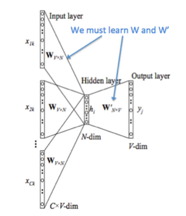

Models and Architechtures in Word2vec
Models
CBOW (Continuous Bag of Words)
Use the context to predict the probability of current word.

- Context words' vectors are $\upsilon_{c-n} ... \upsilon_{c+m}$ ($m$ is the window size)
- Context vector $ \hat{\upsilon}=\frac{\upsilon_{c-m}+\upsilon_{c-m+1}+...+\upsilon_{c+m}}{2m} $
- Score vector $z_i = u_i\hat{\upsilon}$, where $u_i$ is the output vector representation of word $\omega_i$
- Turn scores into probabilities $\hat{y}=softmax(z)$
- We desire probabilities $\hat{y}$ match the true probabilities $y$.
We use cross entropy $H(\hat{y},y)$ to measure the distance between these two distributions. $$H(\hat{y},y)=-\sum_{j=1}^{\lvert V \rvert}{y_j\log(\hat{y}_j)}$$
$y$ and $\hat{y}$ is accurate, so the loss simplifies to: $$H(\hat{y},y)=-y_j\log(\hat{y})$$
For perfect prediction, $H(\hat{y},y)=-1\log(1)=0$
According to this, we can create this loss function:
Skip-Gram
Use current word to predict its context.

- We get the input word's vector $\upsilon_c$
- Generate $2m$ score vectors, $uc_{c-m},...,u_{c-1},...,u_{c+m}$.
- Turn scores into probabilities $\hat{y}=softmax(u)$
- We desire probabilities $\hat{y}$ match the true probabilities $y$.
Models
Minimize $J$ is expensive, as the summation is over $\lvert V \rvert$. There are two ways to reduce the computation. Hierarchical Softmax and Negative Sampling.
Hierarchical Softmax
Encode words into a huffman tree, then each word has a Huffman code. The probability of it's probability $P(w\lvert Context(\omega))$ can change to choose the right path from root the che leaf node, each node is a binary classification. Suppose code $0$ is a possitive label, $1$ is negative label. If the probability of a possitive classification is $$ \sigma(X^T_\omega \theta)=\frac{1}{1+e^{-X^T_\omega}} $$
Then the probability of negative classification is $$ 1-\sigma(X^T_\omega \theta) $$
 足球's Huffman code is $1001$, then it's probability in each node are
足球's Huffman code is $1001$, then it's probability in each node are
where $\theta$ is prarameter in the node.
The probability of the 足球 is the production of these equation.
Generally,
Negative Sampling
Choose some negitive sample, add the probability of the negative word into loss function. Maximize the positive words' probability and minimize the negitive words' probability.
Let $P(D=0 \lvert \omega,c)$ be the probability that $(\omega,c)$ did not come from the corpus data. Then the objective funtion will be
where $\theta$ is the parameters of the model($\upsilon$ and $u$).
Ref:
Comments
Comments powered by Disqus